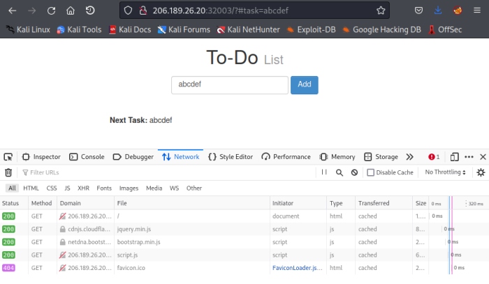
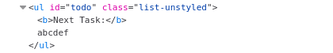
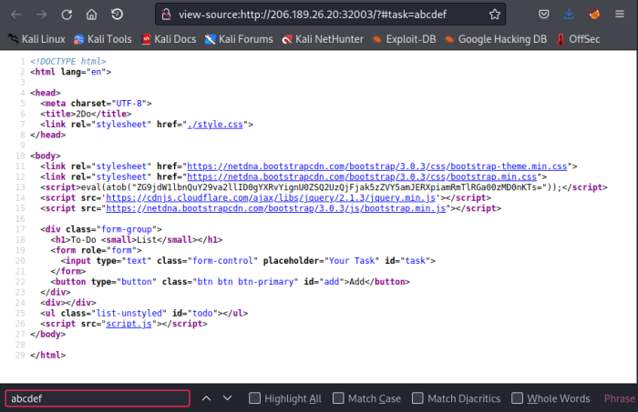

Verify a DOM XSS URI Fragment
Below points are true only for DOM XSS URI fragment vulnerability and NOT for DOM XSS in general
DOM XSS URI fragment is a form of XSS where the entire tainted data flow from
source to
sink takes place in the browser, i.e., the source of the data is in the DOM, the sink is also in the DOM, and the data flow never leaves the browser!
To check if input parameter is client side through JavaScript and so processed on the browser:
• clent side parameters use a hashtag
# • When we give an input to a DOM based field there will be NOT request be made. We can check it in the Developer Tools → Network Tab (CTRL +I)
• The input will be
visible only through the Inspector(CTRL+I) of the page and
NOT in the Source Code of the page.
This is because the JavaScript code is updating the page when we send the input, which is after the page source is retrieved by our browser, hence the base page source will not show our input, and if we refresh the page,
Note: for Reflected (Not Persistent) XSS the input is visible both in the Inspector and in the Source code because the input is processed Server Side and sent to the Client
◇ If we Inspect the page with the Inspector(CTRL+I) we will see the input:
 ◇ if we check the page through the Source Code it will be NOT be there
